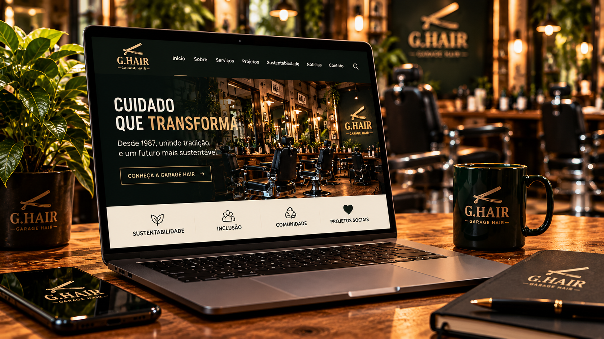
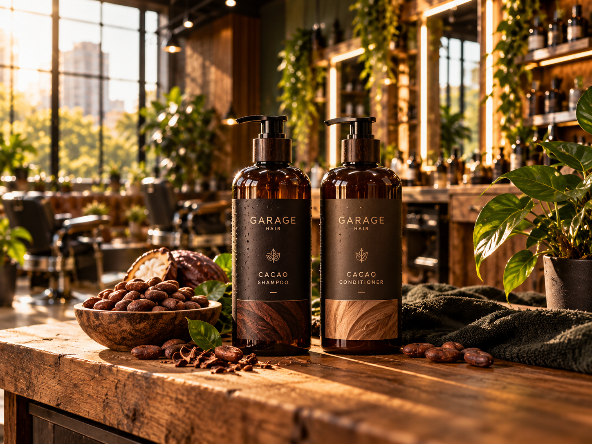
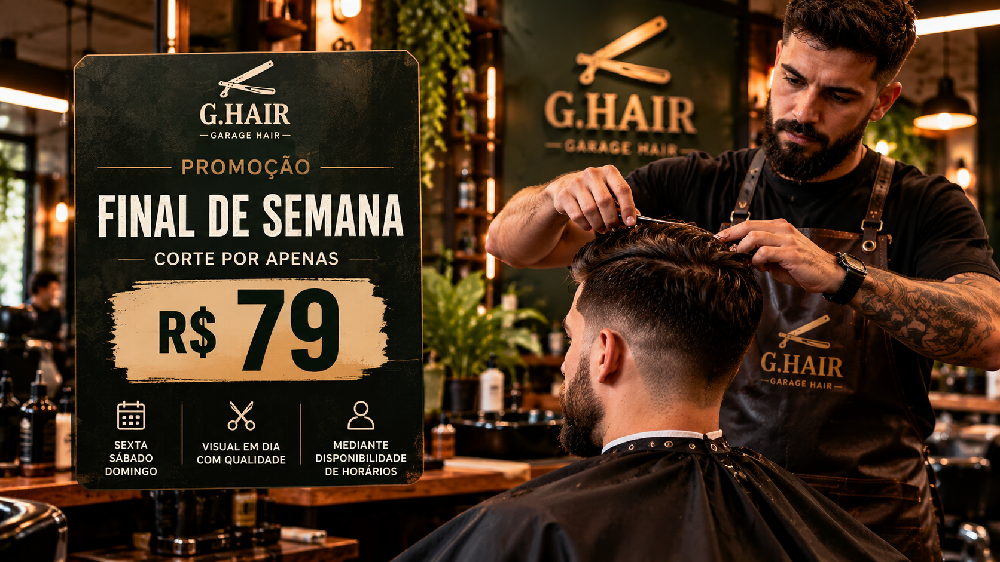
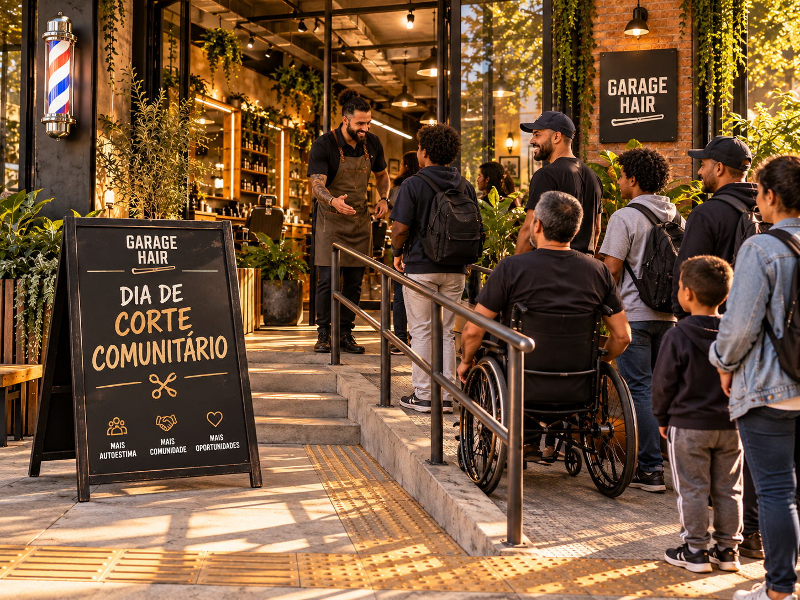
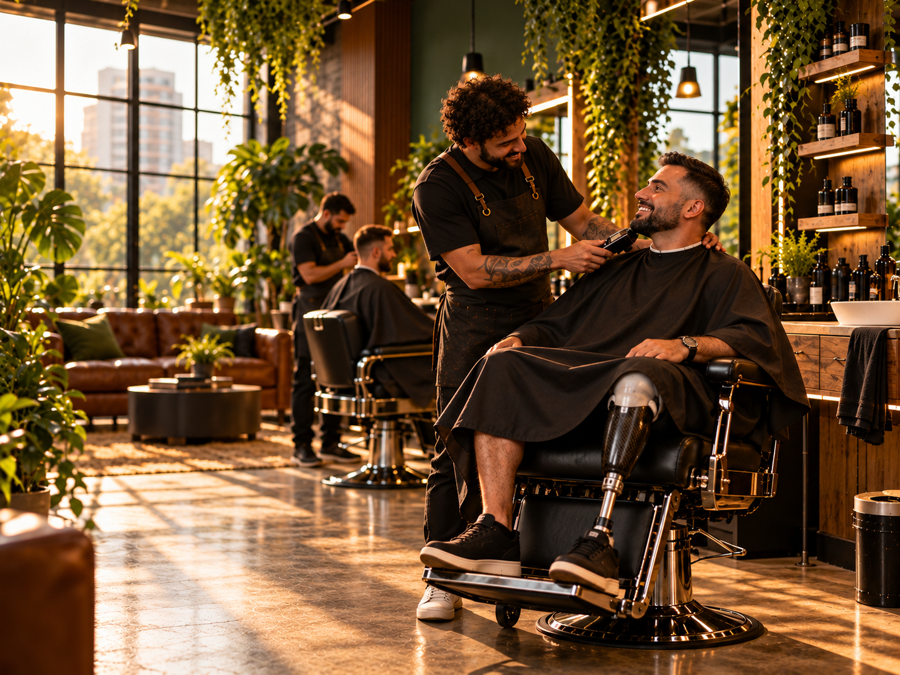

DestaqueGarage Hair lança seu novo website
O novo portal digital da Garage Hair reúne serviços, produtos, projetos, sustentabilidade, acessibilidade e as principais novidades da barbearia.
Acompanhe lançamentos, projetos sociais, promoções, iniciativas sustentáveis e tudo o que acontece na Garage Hair.
Ver últimas notíciasFique por dentro das novidades, ações, projetos e comunicados da Garage Hair.
Informação, comunidade e transformação em um só lugar.

DestaqueO novo portal digital da Garage Hair reúne serviços, produtos, projetos, sustentabilidade, acessibilidade e as principais novidades da barbearia.

ProdutosA nova linha está sendo planejada com foco no fortalecimento dos fios, cuidado capilar e ingredientes de origem mais consciente.

PromoçãoA Garage Hair prepara uma condição especial para quem deseja renovar o visual durante o fim de semana.

Projetos sociaisUma nova edição da ação social está sendo preparada para aproximar ainda mais a Garage Hair da comunidade.

InclusãoA barbearia reforça seu compromisso em proporcionar uma experiência mais acolhedora e acessível para todos.